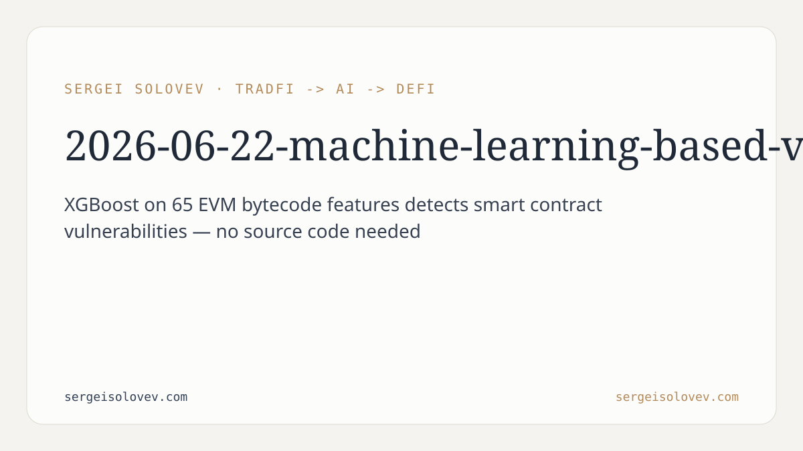

```markdown
---
title: Machine Learning Smart Contract Vulnerability Detection via EVM Bytecode Feature Engineering
date: 2026-06-22
slug: machine-learning-based-vulnerability-detection-in
meta_description: XGBoost on 65 EVM bytecode features achieves 0.947 F1 detecting Ethereum smart contract vulnerabilities—no source code or ABI needed.
tags: [smart, contract, security]
canonical_doi: 10.6084/m9.figshare.31429971
---
Smart contract vulnerabilities have cost the DeFi ecosystem over a billion dollars. The tools that dominate detection today — symbolic execution engines and static analyzers — are precise but computationally expensive, and they require source code or a contract ABI to operate. Neither condition holds reliably in production: a large share of deployed Ethereum contracts are unverified, and running full static analysis continuously over the contract population at scale is not practical. The result is a detection bottleneck. Manual audits are thorough but expensive and slow. Automated tools with high precision cannot run at the speed and breadth the ecosystem demands. The missing piece is a fast pre-screening layer — something that scores every deployed contract against a vulnerability signal in seconds, before committing the analytical cost of a full audit pass.
The system requires neither Solidity source code nor a contract ABI. It operates on compiled EVM bytecode, which is available on-chain for every deployed contract. The pipeline disassembles the bytecode and extracts 65 numerical features, each engineered to capture signals associated with known vulnerability classes.
The features span five categories. Reentrancy patterns track the sequencing of external calls relative to state writes — the structural signature of the classic reentrancy vulnerability. Arithmetic overflow indicators flag unchecked operations and integer boundary conditions. Gas-based denial-of-service features measure unbounded loops and dynamic call costs that can be exploited to lock contracts. Access control anomalies detect unusual patterns in ownership checks and privileged function exposure. Environmental dependencies capture reliance on block timestamps, block numbers, and the distinction between `tx.origin` and `msg.sender`.
Every feature is a scalar — an opcode count, a ratio, or a binary flag. Computation requires one pass over the disassembled instruction stream. No control-flow graph, no abstract interpretation, no constraint solver.
The training corpus covers 117,091 real-world Ethereum smart contracts, labelled by the Slither static analyser. Slither acts as the labelling oracle: its detector output defines the binary ground truth (vulnerable / safe) for each contract. That design choice is worth stating clearly. The model learns to replicate Slither's classification boundary, not an independent human audit. Its ceiling is therefore Slither's own precision. What it offers in return is that precision at a fraction of Slither's compute cost — which, for large-scale screening, is the relevant trade-off.
Evaluation follows stratified 5-fold cross-validation, which preserves class balance across training folds. A separate held-out validation set is kept offline throughout hyperparameter tuning and used only for the final accuracy estimate.
Four classifiers were evaluated on the 65-feature vectors: Logistic Regression, Decision Tree, Random Forest, and XGBoost. The comparison was deliberate — it tests how much predictive signal comes from non-linear feature interactions that linear models cannot exploit.
XGBoost outperformed the other three by a clear margin. Bayesian hyperparameter optimisation via Optuna over 50 trials produced the final configuration. On 5-fold cross-validation, the tuned model achieves an F1-score of 0.947. On the held-out validation set, it reaches 93% accuracy, with 0.97 recall on vulnerable contracts and 0.85 recall on safe contracts.
The recall asymmetry is the design outcome that matters most in this setting. Missing a vulnerable contract — a false negative — is more costly than incorrectly flagging a safe one. A 0.97 recall on the vulnerable class means the model surfaces nearly all true positives. The 0.85 recall on safe contracts means some safe contracts are flagged unnecessarily, which is an acceptable trade-off at the screening stage: flagged contracts proceed to deeper analysis rather than being directly blocked.
The paper also benchmarks a text-based alternative: treating the opcode sequence as a document and extracting n-gram vectors, as in a standard NLP classification pipeline. The comparison is direct and the result is unambiguous — hand-crafted numerical features substantially outperform n-gram vectorisation.
The reason is structural. N-grams capture local co-occurrence patterns in the instruction stream. Vulnerability signatures like reentrancy, however, are not local — they are defined by global ordering constraints between calls and state updates across the full execution path. A feature that explicitly encodes the ratio of state-write instructions appearing before external call instructions captures that constraint directly. An n-gram model has to learn it implicitly from surface co-occurrences, which is both harder and less sample-efficient. When domain knowledge maps cleanly to explicit features, encoding it explicitly beats representation learning.
The immediate practical value is that this approach can run at scale. A model that processes raw bytecode through 65 scalar features can be applied continuously across all deployed Ethereum contracts. That is not feasible with symbolic execution or full static analysis. The approach opens the door to a real-time screening layer: every new contract deployment can be scored within seconds of hitting the chain, before users interact with it.
For DeFi protocols that integrate third-party contracts — price oracles, cross-chain bridges, DEX routers — a fast bytecode scanner provides a first-pass risk signal that informs due diligence without waiting for a manual audit. It does not replace an audit. It cheaply narrows the population of contracts that warrant one, which changes the economics of coverage substantially.
The feature engineering result carries a broader implication for practitioners building ML on blockchain data. When domain knowledge is available and maps to well-defined structural properties of the data, encoding it explicitly in features outperforms generic representation learning. The 65 features here are not generic — each was designed around a specific vulnerability class. That prior knowledge beats n-gram generalisation on this task. In any domain where the target encodes structured causal relationships rather than surface statistical patterns, feature engineering over domain primitives remains competitive with — and in this case clearly outperforms — learned representations.
The benchmark also sets a reproducible baseline. Anyone building a bytecode-based vulnerability classifier now has four reference points on a consistent evaluation setup: 117,091 real-world contracts, Slither labels, stratified 5-fold cross-validation, and a held-out validation set.
The binding constraint is the labelling oracle. The model learns the boundary Slither draws, including Slither's own false positives and false negatives. Extending the dataset with labels from confirmed on-chain exploits or independent human audits would let the model learn against a harder and more reliable ground truth. The second limitation is the binary framing. The current model outputs a single vulnerable/safe label per contract; practical triage requires per-vulnerability-class scores, which demands a multi-label reformulation and a finer-grained labelling pass over the dataset. Both are the natural next steps. Code, features, and evaluation materials are available at [github.com/SergeySolovyev/Machine-Learning-Based-Vulnerability-Detection](https://github.com/SergeySolovyev/Machine-Learning-Based-Vulnerability-Detection).
---
```bibtex
@misc{solovev2026mlvuln,
author = {Solovev, Sergei},
title = {Machine Learning-Based Vulnerability Detection in {Ethereum}
Smart Contracts via {EVM} Bytecode Feature Engineering},
year = {2026},
month = feb,
doi = {10.6084/m9.figshare.31429971},
url = {https://doi.org/10.6084/m9.figshare.31429971},
note = {Preprint v1, figshare}
}
```
```